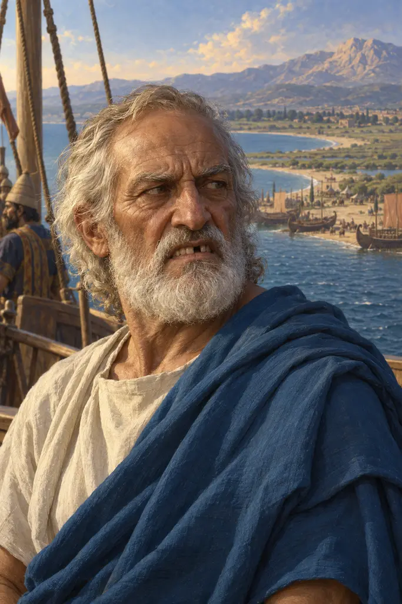
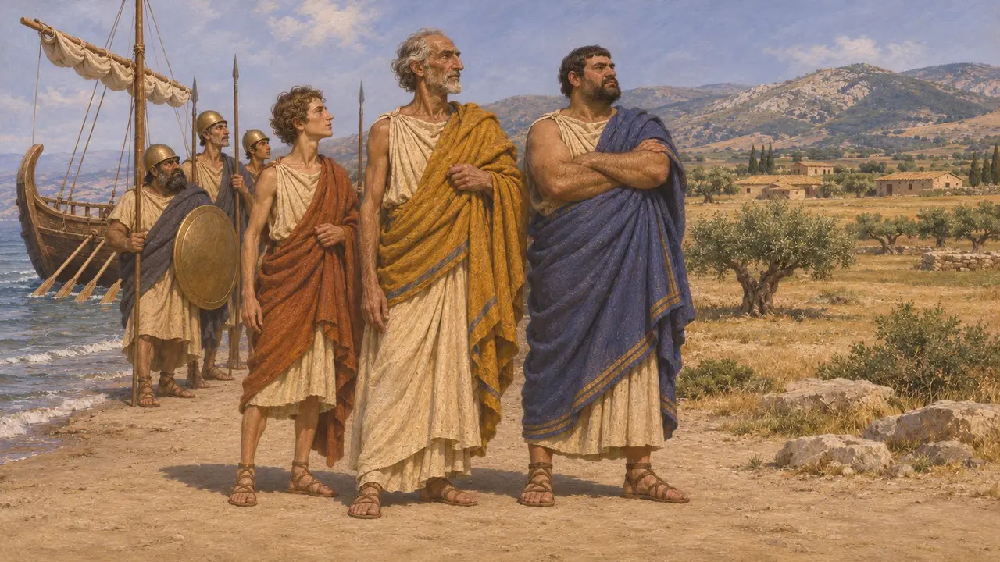
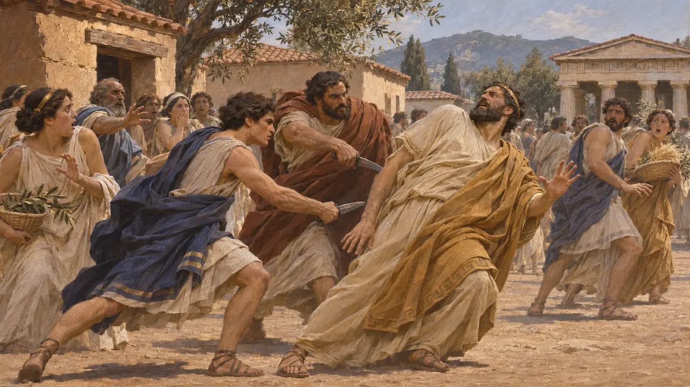
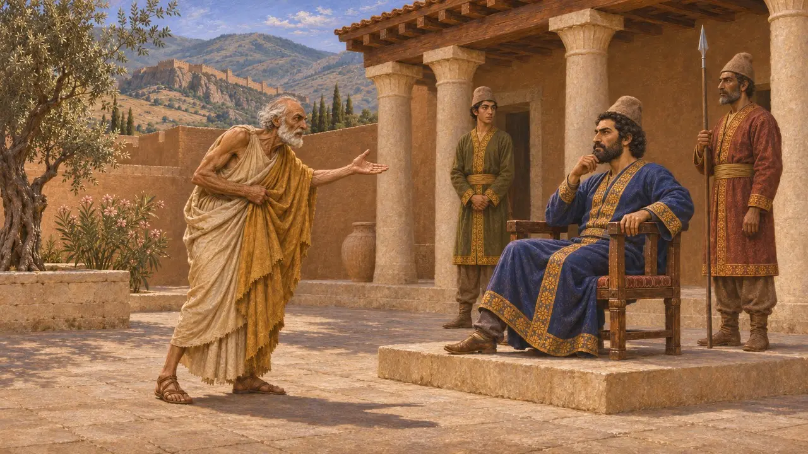
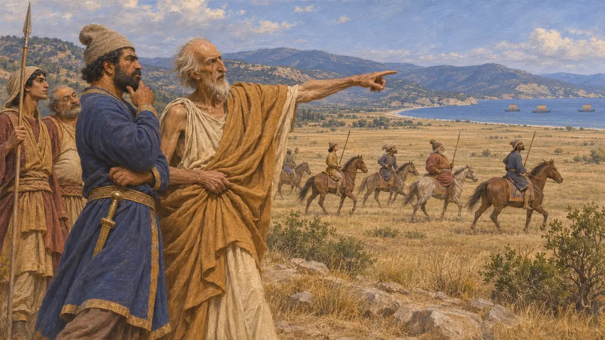
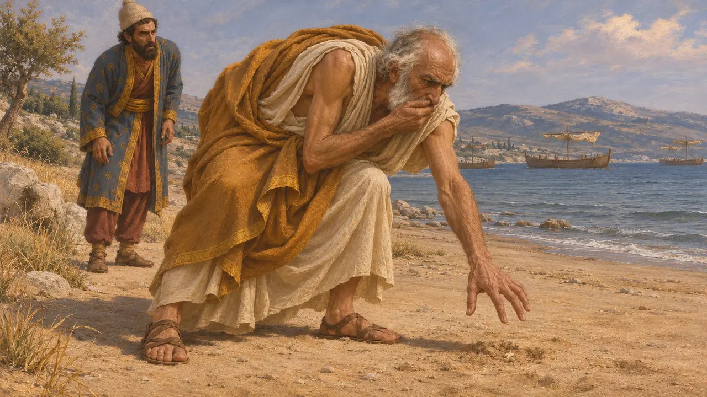

Hippias
Tyrann von Athen etwa 527–510 v. Chr., später ein Verbannter, der sich Persien zuwandte
Im Spiel: Level 8: Die Bucht von Marathon
Hippias, Sohn des Peisistratos, war der Letzte seiner Familie, der als Tyrann über Athen herrschte, von etwa 527 v. Chr. bis die Spartaner ihn 510 v. Chr. vertrieben. Im Exil wandte er sich den Persern zu und führte 490 v. Chr. die Flotte des Datis und Artaphernes nach Marathon, in der Hoffnung, wieder eingesetzt zu werden. Sein Werdegang zeigt, wie Persien verbannte griechische Herrscher im Westen als Verbündete und Führer nutzte.
Im Spiel: Die Chronik des Spiels nennt Hippias als den verbannten Tyrannen, der die Flotte des Datis nach Marathon führte, und folgt damit Herodot. Die Jahreszahlen 527-510 v. Chr. sind nur ungefähr, da sein Vater wohl 528 v. Chr./7 starb.

Erbe des Peisistratos
Antiker BerichtHerodot berichtet, dass Peisistratos, als er Athen zum dritten Mal an sich riss, wahrscheinlich um 546 v. Chr., mit seinen Söhnen an seiner Seite bei Marathon landete. Nach dem Tod des Peisistratos, wahrscheinlich 528 v. Chr./7, ging die Macht auf seine Söhne über. Thukydides besteht darauf, dass Hippias, der Älteste, die Herrschaft innehatte und nicht sein jüngerer Bruder Hipparchos, wie viele Athener glaubten. Er fügt hinzu, die Familie habe die Gesetze der Stadt der Form nach gewahrt, die Ämter aber mit eigenen Leuten besetzt.
Herodotus 1.62-64; Thucydides 6.54-55; Athenaion Politeia 17

Die Ermordung des Hipparchos
UmstrittenIm Jahr 514 v. Chr. töteten Harmodios und Aristogeiton Hipparchos beim Fest der Panathenäen, und spätere Athener ehrten die beiden als Befreier der Stadt. Thukydides widersprach dieser Sicht. Er schreibt, der Beweggrund sei ein privater Liebesstreit gewesen, Hippias selbst sei unversehrt geblieben und seine Herrschaft danach härter geworden. Auch Herodot berichtet, die Tyrannis habe noch vier Jahre gedauert und die Athener schwerer bedrückt.
Thucydides 6.53-59; Herodotus 5.55-56

Von Athen nach Sardes
Antiker BerichtHerodot berichtet, die verbannten Alkmaioniden hätten die Pythia in Delphi bestochen, damit sie Sparta zur Befreiung Athens dränge, und 510 v. Chr. belagerte König Kleomenes Hippias auf der Akropolis. Als seine Kinder gefangen genommen wurden, willigte Hippias ein, nach Sigeion am Hellespont zu gehen. Da Spartas Verbündete sich später weigerten, ihn wieder einzusetzen, ging er nach Sardes und hetzte den Satrapen Artaphernes gegen Athen auf. Als Athen sich weigerte, ihn wieder aufzunehmen, wurde es laut Herodot zum offenen Feind Persiens.
Herodotus 5.62-65; Herodotus 5.91-96

Führer nach Marathon
Antiker BerichtHerodot berichtet, Hippias habe die Perser nach Marathon geführt, weil die Ebene sich für Reiterei eignete und nahe bei Eretria lag. Er brachte auch die eretrischen Gefangenen auf das Inselchen Aigilia. Thukydides schreibt, Hippias sei über Lampsakos zu Dareios gegangen und Jahre später als alter Mann mit den Medern nach Marathon gekommen. Kein persisches Dokument nennt ihn, seine ganze Geschichte stammt also von griechischen Autoren.
Herodotus 6.102, 6.107; Thucydides 6.59

Der verlorene Zahn und sein Ende
Spätere LegendeHerodot berichtet, Hippias habe geträumt, bei seiner Mutter zu liegen, und dies als Zeichen gedeutet, dass er Athen zurückgewinnen und hochbetagt in seiner Heimat sterben werde. Bei der Landung musste er so heftig niesen und husten, dass ihm ein lockerer Zahn in den Sand fiel und verloren ging, und er erklärte, das Land werde niemals ihnen gehören. Die Geschichte ist als Vorzeichen des Scheiterns gestaltet. Herodot sagt nicht, wie Hippias starb, während viel spätere Autoren wie Justin behaupteten, er sei bei Marathon gefallen.
Herodotus 6.107; Justin, Epitome of Pompeius Trogus
Quellen
- Herodotus, Histories 1.59-64, 5.55-65, 5.91-96, 6.102-107
- Thucydides 1.20, 6.53-59
- Aristotle (or his school), Athenaion Politeia 17-19
- Justin, Epitome of Pompeius Trogus
- P. Briant, From Cyrus to Alexander, 2002
- P. Krentz, The Battle of Marathon, 2010